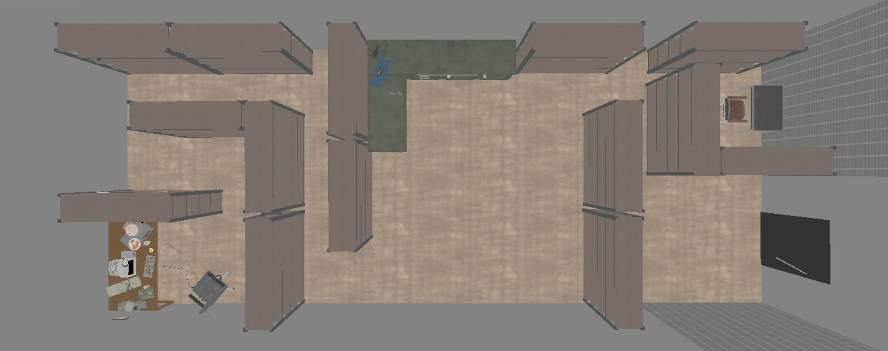

Sector Zero
- Engine
- Unreal 5
- Language
- C++ / Blueprint
- Role
- Solo — everything
- Status
- Prototype
A first-person horror game where a text file is the physics engine. You play Brian, a contractor sent into a dead Obscura Dynamics research site with no memory of arriving. The terminal in the room — RealityTXT — holds a record of every object around you, and whatever the record says, reality obeys. Change a number in a text file and the object changes in front of you. Brian has a record too.

One room. Everything in the game happens here.
The design bet: condense the whole experience into one small space so every object in it can be built to a standard a larger map could never afford.
The chair is a real chair you can sit in and drive. A screwdriver charges, shakes, spasms at full power and returns to your hand when you throw it too far. The lantern flickers, and sometimes decides not to. Nothing here is a generic interact prompt. The trade-off is absolute: with this little floor space, anything dull has to look dull at a glance, so the player never spends attention on something that won't pay it back.
Credentials come off a note in the room. Tab completion, command history, and a real error on a bad path — the shell is a parser, not a prop.
A real shell, not a menu in disguise
RealityTXT runs a working command set — ls, cd, cat,
create, edit, rm, mail — over a virtual
filesystem, with tab completion, command history, and genuine errors on bad paths. Anyone who
has used a terminal already knows how to play, and anyone who hasn't learns a real skill by
accident.
That choice pays off everywhere else. Every mechanic in the game becomes a text operation, so new features cost a command instead of a UI.
The terminal talks back
An in-fiction mail client runs inside the shell. Messages arrive, you read them,
and reply gives you a numbered set of responses to choose from — never one
correct answer, always a choice you make with incomplete information.
This is the cheapest and most flexible narrative surface in the game. Anything can write to it: a coworker who may still be alive somewhere in the building, the company that sent you, or something using the mail system that shouldn't have access to it. It doubles as the hint system — a stuck player gets pointed at possibilities rather than told where to go.
The storm
Every so often the room loses its grip. Gravity stops applying to a set of objects, each one takes a push, and the things you were looking at a second ago are above you. Storm severity rolls on a curve that makes mild ones common and violent ones rare, so the room is never quite predictable and never quite settled.
When it passes, the loose objects drift back toward where they started — and don't quite make it. The lights cut for a moment, and in the dark everything is teleported the rest of the way into its exact original state. The drift is what the player sees; the blackout is what hides the snap. Reality holds together only because you weren't looking when it was corrected.
The storm is the foundation everything else sits on, and it's built to keep growing. Rare events layered on top of the ordinary cycle mean the room can still surprise a player hours in — and one object is already singled out each storm as a target, which is where the creature design hooks in.
Cataloguing is the counter-mechanic
Register an object in RealityTXT and the storm can't touch it any more. It stops being picked. It stays where it is.
So the room starts unstable and becomes solid one object at a time, at exactly the rate the player is willing to pay attention. Nothing announces this. You notice because the corner you documented first is the corner that stopped moving.
Registering is also what makes an object usable. Some objects are gadgets — a bucket that shelters whatever you drop in it, scissors that work as a weapon but freeze in place after a hit — and a gadget on file is a gadget you can rewrite. Many arrive with deliberately bad numbers. Fixing them, or pushing them further out of spec on purpose, is where the economy below actually gets spent.
The economy
Editing reality costs something you earn by looking at it.
- Registering a new object earns 1 point.
- Editing costs points equal to the number of characters changed. Overspend and the edit is refused and the file reverts.
- The balance lives inside the file itself, visible in the same text you're editing.
The character-count cost is what makes it a design problem rather than a cheat menu.
1 to 9 is one character. Turning a weight into something absurd
costs real budget. Every edit becomes a question of what's worth spending on — and the answer
changes depending on how much of the room you've bothered to examine.
Creating an object after discovering it. Every object has basic properties such as size and weight, while rarer or more specialized objects may include additional attributes that can be viewed and edited.
Brian is an object
The player has a file like everything else, and editing it rewrites how the game feels to play. Height rescales the character capsule, so a shelf that was out of reach isn't any more. Weight drives movement and gravity on a curve: drop near zero and you move two and a half times faster in near-freefall, push past 120 and you slow to a crawl under four times normal gravity.
Set the weight negative and gravity inverts. Brian falls upward. It's one character in a text file, and it turns the ceiling into the floor.
Editing the player's own record. Height and weight are movement parameters, so a spatial problem becomes a text problem.
Found, not told
Objects carry an ID and, sometimes, one line from whoever used them last — a complaint about a blank disc, someone else's cold pizza. Nothing narrates who left them. A player either notices or doesn't, and either way the room keeps working.
Inspecting objects. Character comes out of the details, in whatever order the player happens to find them.
Movement
The player can walk freely throughout the environment, but can also interact with an office chair and sit down to move using it. While seated, locomotion switches to tank controls: you propel yourself by kicking off the floor in short impulses and steer the chair directly. Rotation speed is dynamic, allowing for quick turns while remaining precise for fine adjustments, and collisions cause the chair to skid and bounce instead of stopping abruptly. The entire game can be completed while seated, making the office chair a fully viable—and immersive—way to play.
Office chair locomotion: leg impulses for thrust, tank controls, wall bounce.
Where it goes
Everything above is running. The reason this design is worth building out is that the expensive part is already paid for: once the world is a filesystem and reality reads from it, a new mechanic is a new field in a text file. A gadget, a storm event, a character who writes to your inbox — each one slots into a system that already exists.
The room is deliberately small so it can absorb that. The next version scales the storm's rare events, wires the creature to the target it already selects, and pushes the gadget count up — none of which requires rebuilding what's here.